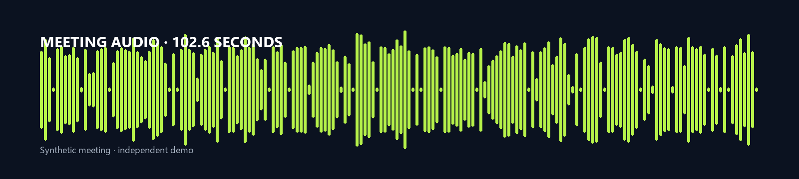

A transcript-first workflow that transcribes a meeting, applies human correction, extracts decisions and action items with owners and due dates, and packages English, Chinese, and bilingual subtitles.
The problem
The synthetic meeting audio is clear, yet the small ASR model still makes mistakes with names, numbers, and similar-sounding words. The final notes use a human-corrected transcript, so owners and deadlines are not guessed from garbled text.
Vosk produces a timestamped raw transcript. This demo measures word error rate against the synthetic ground truth.
Rules pull out key points, decisions, risks, owners, tasks, and deadlines from the corrected transcript.
Markdown notes, action-item CSV, Excel workbook, and English / Chinese / bilingual SRT.

| Raw ASR snippet |
|---|
| weekly products sink october twelfth twenty twenty six saver good morning let's review the launch plan key point the beta launch is still on track for october thirtieth but the payment integration is blocked by the vendor noah i checked the pricing sheet yesterday the annual plan is missing to regional prices action item know i will update the pricing she'd by wednesday mia i spoke with three beta customers they want a simpler on boarding flow key point on boarding is the top usability concern liam the revised launch deck is ready for review action item liam will send the revised launch deck by friday emma i can book the customer interview ac |
| Owner | Task | Due |
|---|---|---|
| Noah | update the pricing sheet | 2026-10-14 |
| Liam | send the revised launch deck | 2026-10-16 |
| Emma | book the customer interview | 2026-10-20 |
| Noah | prepare the fallback pricing option | 2026-10-19 |
| Mia | draft the onboarding checklist | 2026-10-15 |
| Emma | send the onboarding checklist | 2026-10-15 |
| Liam | schedule the kickoff | 2026-10-28 |
| Emma | prepare the training video | 2026-10-21 |
| Bilingual SRT preview |
|---|
| 1 00:00:06,210 --> 00:00:17,970 [Ava] Good morning. Let's review the launch plan. Key point: the beta launch is still on track for October 30, but the payment integration is blocked by the vendor. [Ava] 早上好。我们来回顾发布计划。关键点：Beta 发布仍按计划在 10 月 30 日进行，但支付集成被供应商阻塞。 2 00:00:20,220 --> 00:00:30,960 [Noah] I checked the pricing sheet yesterday. The annual plan is missing two regional prices. Action item: Noah will update the pricing sheet by Wednesday. [Noah] 我昨天检查了价格表。年度计划缺少两个区域价格。行动项：Noah 将在周三前更新价格表。 3 00:00:33,210 --> 00:00:42,750 [Mia] I spoke with three beta customers. They want a simpler onboarding flow. Key point: onboarding is the top usability concern. [Mia] 我和三位 Beta 客户沟通过了。他们希望有更简单的入驻流程。关键点：入驻流程是最大的可用性问题。 4 00:00:45,180 --> 00:00:52,680 [Liam] The revised launch deck is ready for review. Action item: Liam will send the revised launch deck by Friday. [Liam] 修订后的发布演示文稿已经可以审阅。行动项：Liam 将在周五前发送修订后的发布演示文稿。 5 00:00:54,960 --> 00:01:01,980 [Emma] I can book the customer interview. Action item: Emma will book the customer interview for next Tuesday. [Emma] 我可以预约客户访谈。行动项：Emma 将在下周二预约客户访谈。 6 00:01:04,230 --> 00:01:15,390 [Ava] Decision: we will delay the public beta by one week to finish the payment integration. Risk: the vendor may miss the new deadline, so we need a fallback plan. [Ava] 决定：我们将公开 Beta 推迟一周，以完成支付集成。风险：供应商可能错过新的截止日期，所以我们需要一个备用方案。 7 00:01:17,670 --> 00:01:25,470 [Noah] I will prepare a fallback pricing option. Action item: Noah will prepare the fallback pricing option by Monday. [Noah] 我会准备一个备用定价方案。行动项：Noah 将在周一前准备备用定价方案。 8 00:01:27,720 --> 00:01:35,130 [Mia] I will draft the new onboarding checklist. Action item: Mia will draft the onboarding checklist by Thursday. [Mia] 我会起草新的入驻检查清单。行动项：Mia 将在周四前起草入驻检查清单。 9 00:01:37,380 --> 00:01:41,760 [Ava] Great. We wi |
What was built
Vosk transcribes the WAV and returns word timings.
A human-reviewed transcript fixes names and numbers.
Rules find key points, decisions, risks, and action items.
Notes, CSV, Excel, and three SRT variants.
Validation
The demo does not claim perfect ASR. It reports the raw word error rate and uses a human-corrected transcript for the final notes, which is the safer production pattern.
| Meeting | Duration | WER | Actions |
|---|---|---|---|
| Weekly Product Sync | 102.6s | 20.2% | 5 |
| Client Onboarding Call | 78.8s | 20.7% | 4 |
| Operations Review | 80.5s | 17.6% | 4 |
Raw ASR WER is expected for a small offline model. The final notes come from the human-corrected transcript.
Result
Send one sample recording and the output format you need. I will confirm fit, scope, and a fixed price before work starts.
Demo video
Meeting notes, action items & SRT - a silent, captioned demo built for quick review.
Independent demo - synthetic audio. No voiceover; captions only.